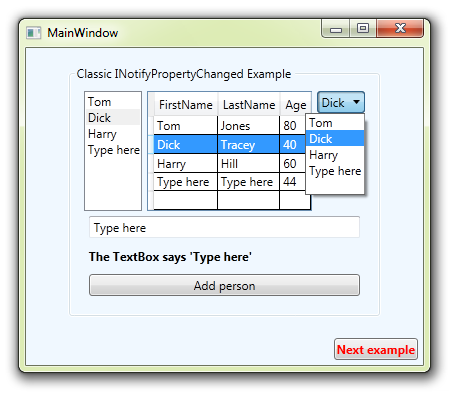

Easy MVVM Example
Introduction
This project will give you crash course on WPF MVVM that you can do in your lunch break! Everything you need to know about binding, INotifyPropertyChanged, Dependency Objects & Properites, POCO objects, Business Objects, Attached Properties and much more!
For a full discussion and detailed breakdown of this project, please read below
http://social.technet.microsoft.com/wiki/contents/articles/13536.easy-mvvm-examples.aspx
Building the Sample
Just download, unzip, open and run!
Description
This project consists of five windows, with practicly no code behind.
All application functionality and navigation is done by the ViewModels
MainWindow - Classic INotifyPropertyChanged

This is the classic MVVM configuration, implementing INotifyPropertyChanged in a base class (ViewModelBase)
The ViewModel is attached by the View itself, in XAML. This is fine if the ViewModel constructor has no parameters.
It has a ListBox, DataGrid and ComboBox all with ItemsSource to the same collection, and the same SeletedItem.
As you change selected Person, you will see all three controls change together.
A TextBox and TextBlock share the same property, and changes in the TextBox reflect in the TextBlock.
Click the button to add a user, it shows in all three controls.
Closing the Window is just a nasty code behind hack, the simplest and worst of the examples.
Window1

This window simply shows how you can attach the ViewModel to the DataContext in code, done by MainWindow.
var win = new Window1 { DataContext = new ViewModelWindow1(tb1.Text) };
var win = new Window1 { DataContext = new ViewModelWindow1(tb1.Text) };
This ViewModel is derived from ViewModelMain, with an extra public property and command to pull from the base class and update the new property and UI.
<Button Content="Change Text" Command="{Binding ChangeTextCommand}" CommandParameter="{Binding SelectedItem, ElementName=dg1}"/>
<Button Content="Change Text" Command="{Binding ChangeTextCommand}" CommandParameter="{Binding SelectedItem, ElementName=dg1}"/>
void ChangeText(object selectedItem)
{
//Setting the PUBLIC property 'TestText', so PropertyChanged event is fired
if (selectedItem == null)
TestText = "Please select a person";
else
{
var person = selectedItem as Person;
TestText = person.FirstName + " " + person.LastName;
}
}
void ChangeText(object selectedItem) { //Setting the PUBLIC property 'TestText', so PropertyChanged event is fired if (selectedItem == null) TestText = "Please select a person"; else { var person = selectedItem as Person; TestText = person.FirstName + " " + person.LastName; } }
You can see I'm having to check for null here, "boiler plating" we could do without, as shown in CanExecute below.
Closing this Window uses the nicest way to do it, using an Attached Behaviour (Property) with a binding to a flag in the ViewModelBase. In our ViewModel we simply call CloseWindow()
Window 2

This example shows the alternative to INotifyPropertyChanged - DependencyObject and Dependency Properties.
public Person SelectedPerson
{
get { return (Person)GetValue(SelectedPersonProperty); }
set { SetValue(SelectedPersonProperty, value); }
}
// Using a DependencyProperty as the backing store for SelectedPerson. This enables animation, styling, binding, etc...
public static readonly DependencyProperty SelectedPersonProperty =
DependencyProperty.Register("SelectedPerson", typeof(Person), typeof(ViewModelWindow2), new UIPropertyMetadata(null));
public Person SelectedPerson { get { return (Person)GetValue(SelectedPersonProperty); } set { SetValue(SelectedPersonProperty, value); } } // Using a DependencyProperty as the backing store for SelectedPerson. This enables animation, styling, binding, etc... public static readonly DependencyProperty SelectedPersonProperty = DependencyProperty.Register("SelectedPerson", typeof(Person), typeof(ViewModelWindow2), new UIPropertyMetadata(null));
The only drawback to Dependency Properties for general MVVM use is they need to be handled on the UI layer.
This example also shows how a command can also control if a button is enabled, through it's CanExecute delegate.
As we are not using the parameter, but relyng on the ViewModel selected item, if there is none, the CanExecute method returns false, which disables the button. All done by behaviour, no messy code or boiler plating.
public ViewModelWindow2()
{
People = FakeDatabaseLayer.GetPeopleFromDatabase();
NextExampleCommand = new RelayCommand(NextExample, NextExample_CanExecute);
}
bool NextExample_CanExecute(object parameter)
{
return SelectedPerson != null;
}
public ViewModelWindow2() { People = FakeDatabaseLayer.GetPeopleFromDatabase(); NextExampleCommand = new RelayCommand(NextExample, NextExample_CanExecute); } bool NextExample_CanExecute(object parameter) { return SelectedPerson != null; }
Window 3
Window 4

Window 5

For a full discussion and detailed breakdown of this project, please read below:
http://social.technet.microsoft.com/wiki/contents/articles/13536.easy-mvvm-examples.aspx